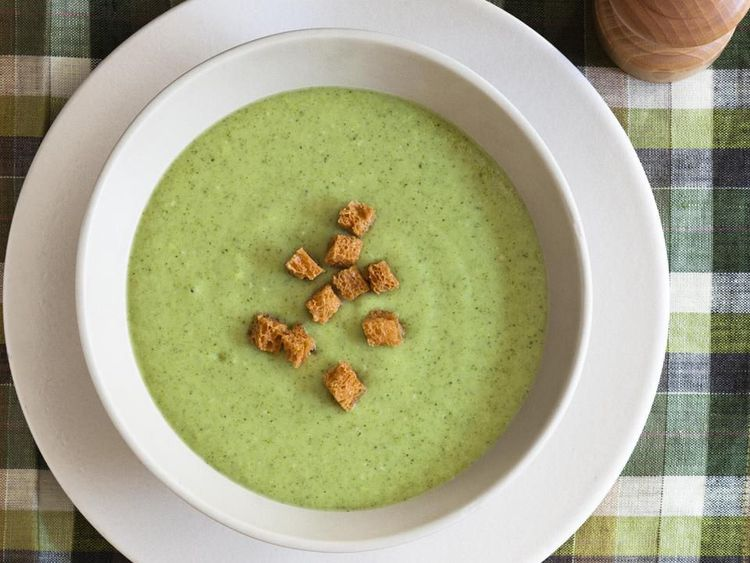

Cream of Broccoli Soup

Let's get Started
This soup will have you begging for more! A comfort staple that you can always reach for with a dose of healthy greens.
Ingredients
- 5 tbsp butter, divided
- 1 onion, chopped
- 1 stalk of celery, chopped
- 3 cups chicken broth
- 8 cups broccoli florets
- 3 tbsp all-purpose flour
- 2 cups of milk
- ground black pepper to taste
Directions
- Gather all ingredients
- Melt 2 tbsps of butter in a medium stock pot over medium heat. Saute onion and celery until tender.
- Add broccoli and broth, cover,and simmer for 10 minutes
- Pour the soup into a blender, filling the pitcher no more than halfway full. Hold down the lid of the blender with a folded kitchen towel, and carefully start the blender, using a few quick pulses to get the soup moving before leaving it on to puree. Puree in batches until smooth and pour into a clean pot. Alternately, you can use an immersion blender and puree the soupright in the cooking pot.